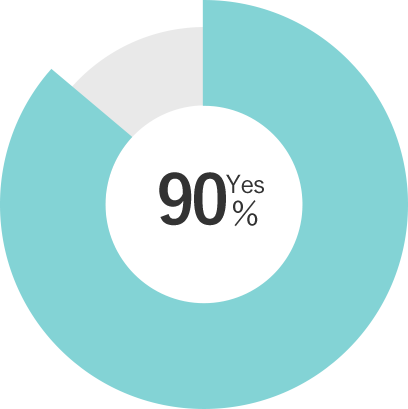

除菌だってこだわりたい、
そんなあなたのためにb-blowは誕生しました。
従来の除菌剤だとにおいが気になってなかなか使えない・・・。
子どもにも使いたいから、刺激が強いものはなるべく避けたい・・・。
おうちの除菌を一本で済ませたい・・・。
b-blowなら、あなたのこだわりを全て叶えます。
さっそく、実感できるこだわり除菌はじめてみませんか？
ABOUT
商品概要
次世代の除菌、ポリヘキサニドって何？
b-blowは、ポリヘキサニドという成分を採用しています。
ポリヘキサニドとは、コンタクトレンズの保存液やウェットティッシュにも使われる除菌効果の高い安全な成分のこと。
酵母やカビにも効果があり、アルコールでは除菌できないノロウイルスにも効果があることで知られています。
さらには新型コロナウイルスと同じエンべロープ型のウィルスにも効果があることが証明されています。

アルコールや次亜塩素酸水より注目される秘密は？
よくある除菌剤だと、においがきつかったり手が荒れてしまうことはありませんか？
ポリヘキサニドはほとんど無臭なのでアルコールなどの独特なにおいが苦手な方でも安心して使えますし、
肌への刺激も少ないので人を選ばずご利用いただけます。

b-blowが選ばれる4つの理由
01 高い安全性
化粧品などにも使われている成分を使用しているため、お肌が弱い方、お子様にも安心して使用することができます。
無色・無臭であり、ほとんど皮膚刺激が無くてとても扱いやすい除菌剤です。
刺激がなく安全だと感じましたか？

02 消臭効果が長続き
優れた包摂力を生かして、臭いを取り込み酸化・分解して消臭します。
乾いても繊維や硬質表面に残って消臭効果が長続きします。
消臭効果の維持を実感できましたか？

03 水に濡れても
落ちにくい
水やお湯でも揮発することなく効果を発揮します。
ご自宅の浴槽水や洗面所・キッチンなどの水回りにもご利用いただけます。
水回りのイヤな臭いは
消えましたか？
04 素材にやさしい
色落ちや金属部分の腐食が気になるお洋服や、普段消毒したくてもなかなか出来ない鞄など、アルコールや次亜塩素酸では使い辛い素材でも使用ができます。
ありませんでしたか
CUSTOMER REVIEWS
お客様の声
”安心して子供にも使えます！”
今まではアルコールで消毒していましたが、子供がいるため部屋全体に吹きかけたり、子供の手に直接使うことが出来ませんでした。
子供にも害のない成分を使っていると友人から聞いたので愛用しています。
気付いたらなくなってたので、詰め替え用も買いました！
31歳(女性)

”低刺刺激だから重宝しています。”
仕事柄、お客様と接する機会が多いため常に持ち歩いてます。
今までのアルコール消毒だと手荒れがひどいのが悩みでしたが、今は全く気にならなくなったので、本当に買ってよかったなと思っています。
36歳(男性)

”アルコールの臭いが苦手な私でも使える！”
アルコール特有のきつい臭いが苦手で今まではこまめに手洗いをして感染症対策をしてました。
使ってみると全然臭いもしないし、使っていてとても安心感があります。
自宅用に一本と、持ち運び用に一本づつ購入させていただきました。
52歳(女性)

”持ち運びやすいサイズとデザインです。”
外出するときは、肌身離さず持ち歩いています！電車に乗った後や、
食事をする前に使っていて、キツイ臭いも全然しないのでとっても重宝しています。
カバンにもすっぽり収まる大きさで、ボトルのデザインもシンプルなので周りの目も
全然気になりません。
28歳(女性)

PRODUCTS
商品紹介

b-blow 除菌ミストスプレー
希望小売価格 100ml/800円(税抜)300ml/1600円(税抜)
＜ポリヘキサニドの特徴＞
他の防腐・殺菌剤と比較して多種類の殺菌に有効性が高く（抗菌スペクトルが広い）、低濃度で除菌作用を発揮します。また、酵母やカビ（真菌類）にも効果があり、さらにアルコールでは除菌できないノロウイルスにも効果が高いことが知られています。新型コロナウイルスと同じ型のウィルスにも有効ということも証明されました。

b-blow 詰め替え用ボトル
希望小売価格 1000ml/2500円(税抜)
手指の除菌以外にも、お子様のおもちゃの除菌や、衣服やカバンなどの布の除菌など、様々な場面で活躍するb-blowは、一般的な除菌剤より減るスピードが早く、「気付いたらすぐ無くなってしまう」という声をいただきました。そんな方の為に、お得な詰め替え用ボトルをご用意。使いたい時に切らしていた…とならないように、是非お買い求めください。

FRENQUENTLYASKEDQUESTION
よくある質問
ポリヘキサニドとはなんですか？
除菌効果が高く、安全な成分です。
食品加工工場や酒類製造工場で除菌洗浄用、公衆浴場や温泉及びレジャー施設でお湯や水の除菌用、コンタクトレンズの保存液、ウエットティッシュの除菌剤などに使用されています。
どのような物に使えますか？
マスク・タオル・ふきん・調理台・テーブル・床・壁・キッチン周り・冷蔵庫の中・風呂場・玄関・布製品・靴・ペット周り・おもちゃ等の生活用品全般に使用できます。
使用方法を教えてください。
手指に使用する場合は3プッシュ程度吹きかけて、両手のひらや指の間にしっかりすりこんでください。
マスクへ使用する場合は、内面・外面の外側に３〜５プッシュしてください。
どのようなウイルスに効果がありますか？
ノロウイルスやインフルエンザウイルスに効果があります。
また、新型コロナウイルスと同様のタイプのウイルスに効果があることが証明されています。
※全ての菌を除去するわけではありません。
保管方法について教えてください。
直射日光・高温多湿な場所は避けて、立てて保管してください。乳幼児の手の届くところに置かないでください。
誤って飲み込んでしまった場合は？
目に入った場合や飲み込んだ場合は水で充分洗い、本品を持参し医師の診察を受けてください。